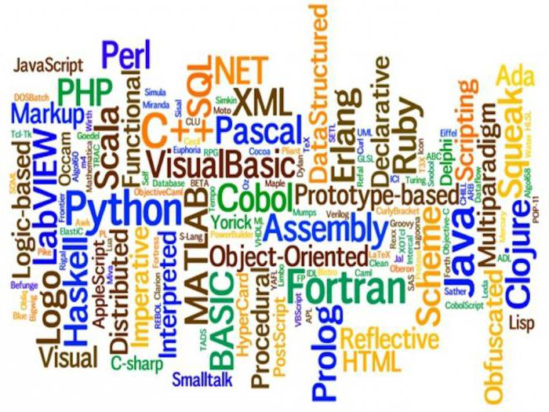

Що таке IT?
Інформаці́йні техноло́гії, ІТ (використовується також загальніший / вищий за ієрархією термін інформаційно-комунікаційні технології (information and communication technologies, ICT) — сукупність методів, виробничих процесів і програмно-технічних засобів, інтегрованих з метою збирання, опрацювання, зберігання, розповсюдження, показу і використання інформації в інтересах її користувачів.

Популярність мов програмування
Улюблені мови програмування
IT спеціальності
Кількість програмістів в Україні
Інші програми